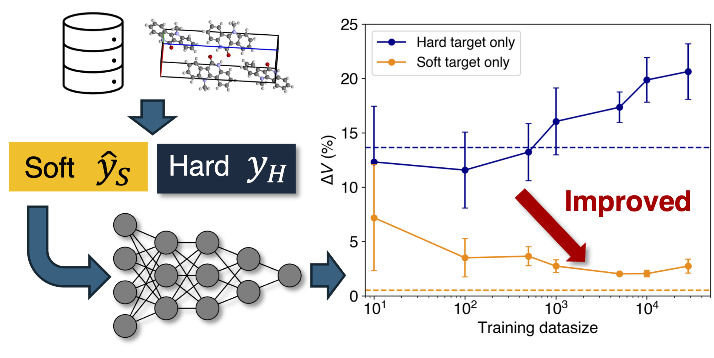

発表論文
学術論文
- Machine Learning-Driven Optimization of Output Force in Photo-Actuated Organic Crystals
Kazuki Ishizaki, Toru Asahi, Takuya Taniguchi, Digital Discovery, (2025).
- Knowledge distillation of neural network potential for molecular crystals
Takuya Taniguchi, Faraday Discussions, 256, 139-155 (2025).

- Proton Conduction in Chiral Molecular Assemblies of Azolium–Camphorsulfonate Salts
Chisato Sato, Shun Dekura, Hiroyasu Sato, Kohei Sambe, Takashi Takeda, Takuya Kurihara, Motohiro Mizuno, Takuya Taniguchi, Jiabing Wu, Takayoshi Nakamura, Tomoyuki Akutagawa, Journal of the American Chemical Society, 146(32), 22699-22710 (2024).
- Effectiveness and limitation of the performance prediction of perovskite solar cells by process informatics
Ryo Fukasawa, Toru Asahi, Takuya Taniguchi, Energy Advances, 3, 812-820 (2024).
- Exploration of elastic moduli of molecular crystals via database screening by pretrained neural network potential
Takuya Taniguchi, CrystEngComm, 26, 631-638 (2024).
- Graph comparison of molecular crystals in band gap prediction using neural networks
Takuya Taniguchi, Mayuko Hosokawa, Toru Asahi, ACS Omega, 8, 39481-39489 (2023).
- Molecular screening for solid–solid phase transition by machine learning
Daisuke Takagi, Toru Asahi, Takuya Taniguchi, Digital Discovery, 2, 1126-1133 (2023).
- Unraveling the Structural and Property Differences Between Highly Similar Chiral and Racemic Crystals Composed of Analogous Molecules
Kazuki Ishizaki, Daisuke Takagi, Toru Asahi, Masahiro Kuramochi, Takuya Taniguchi, Cryst. Growth Des., 23(7), 5330–5337 (2023).
- Superelasticity of a photo-actuating chiral salicylideneamine crystal
Takuya Taniguchi, Kazuki Ishizaki, Daisuke Takagi, Kazuki Nishimura, Hiroki Shigemune, Masahiro Kuramochi, Yuji C. Sasaki, Hideko Koshima, Toru Asahi, Communications Chemistry, 5, 4 (2022).
- Contribution of C−H⋯π Interactions to Polymorphic Transitions of a Molecular Crystal with Disordered Fragments
Takuya Taniguchi, Daisuke Takagi, Toru Asahi, ChemRxiv (Preprint) (2021).
- Reformation of Thalidomide from its Hydrolysis Compound via Intramolecular Dehydration
Takuya Taniguchi, Miri Nakamura, Koichi Tsutao, Kohei Otogawa, Yoshiyuki Ogino, Toru Asahi, Chem. Lett., 50(7), 1388-1391 (2021).
- Actuation Performance of a Photo-bending Crystal Modeled by Machine Learning-based Regression
Kazuki Ishizaki, Ryota Sugimoto, Yuki Hagiwara, Hideko Koshima, Takuya Taniguchi, Toru Asahi, CrystEngComm, 23, 5839-5847 (2021).
- Crystal actuator based on a thermal phase transition and photothermal effect
Yuki Hagiwara, Takuya Taniguchi, Toru Asahi and Hideko Koshima, J. Mater. Chem. C, 8, 4876-4884 (2020)
- Statistical Modeling of Photo-Bending Actuation of Hybrid Silicones Mixed with Azobenzene Powder
Takuya Taniguchi, Loïc Blanc, Toru Asahi, Hideko Koshima and Pierre Lambert, Actuators, 8(4), 68 (2019)
- Photomechanical Azobenzene Crystals
Takuya Taniguchi, Toru Asahi, Hideko Koshima, Crystals, 9, 437 (2019).
- Photo-triggered phase transition of a crystal
Takuya Taniguchi, Hiroyasu Sato, Yuki Hagiwara, Toru Asahi, Hideko Koshima, Commun. Chem., 2, 19 (2019).
本研究の内容は早稲田大学プレスリリースでも紹介されました。
- Two-step photomechanical motion of a dibenzobarrelene crystal
Takuya Taniguchi, Ayumi Kubota, Tatsuya Moritoki, Toru Asahi, Hideko Koshima, RSC Adv., 8, 34314-34320 (2018).
- Walking and rolling of crystals induced thermally by phase transition
Takuya Taniguchi, Haruki Sugiyama, Hidehiro Uekusa, Motoo Shiro, Toru Asahi, Hideko Koshima, Nat. Commun., 9, 538 (2018).
- Mechanical Motion of Chiral Azobenzene Crystals with Twisting upon Photoirradiation
Takuya Taniguchi, Juri Fujisawa, Motoo Shiro, Hideko Koshima, Toru Asahi, Chem. Eur. J., 22, 7950-7958 (2016).
- Mechanical motion of molecular crystals induced by [4 + 4] photodimerisation
Hideko Koshima, Hidetaka Uchimoto, Takuya Taniguchi, Jun Nakamura, Tsuyoshi Asahi, Toru Asahi, CrystEngComm, 18, 7305-7310 (2016).
書籍
- Superelastic Behaviors of Molecular Crystals
Takuya Taniguchi, in Shape Memory Alloys - New Advances, M.A. Chowdhury and M.M. Rahman, Eds., IntechOpen (2023).
- Chapter 3: Mechanically responsive crystals by light and heat
Hideko Koshima, Takuya Taniguchi, Toru Asahi, in Mechanically Responsive Materials for Soft Robotics, H. Koshima, Ed., Wiley-VCH, Weinheim (2019).
解説記事
- 有機結晶へのマテリアルズインフォマティクス応用
谷口卓也, 日本結晶学会誌, 2023年65巻2号 p.139-144.
- 光・熱によって動くメカニカルソフトクリスタル
谷口卓也, 日本結晶学会誌, 2021年63巻1号 p.31-37.
- 世界初！歩き回るロボット結晶が誕生－まったく新しいソフトロボット実現への可能性
小島秀子, 谷口卓也, 朝日透, 化学（化学同人）, 2018年9月号.
- 加熱・冷却すると歩いたり転がったりする「ロボット結晶」を開発！ – ソフトロボットへの応用に期待
谷口卓也, academist Journal, 2018.03.
- 光を当てるとねじれ曲がる結晶 − 分子の反応を材料の動きへ
谷口卓也, academist Journal, 2017.09.
↑